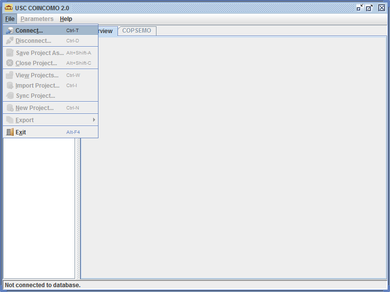
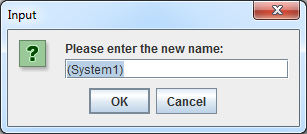
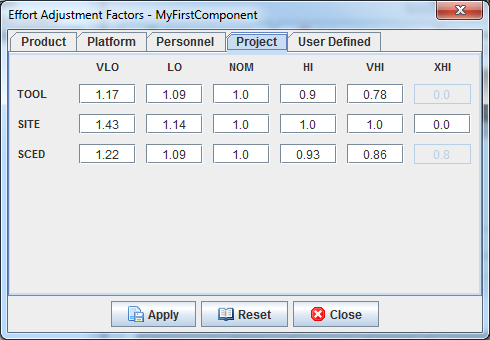
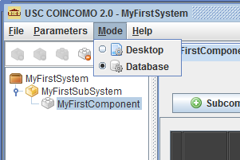

COINCOMO 2.0 User Manual
1. Introduction
1.1 About COINCOMO
COINCOMO (COnstructive INcremental COst MOdel) is a screen-oriented, interactive software package that assists in budgetary planning and schedule estimation of a software development project. Through the flexibility of COINCOMO, a software project manager (or team leader) can develop a model (or multiple models) of projects in order to identify potential problems in resources, personnel, budgets, and schedules both before and while the potential software package is being developed.
The COINCOMO software package is based upon the software cost and schedule estimation model: COnstructive COst MOdel version II (COCOMO II). This is the newly revised version of the original COnstructive COst MOdel (COCOMO) first published by Dr. Barry Boehm in his book Software Engineering Economics, Prentice-Hall (1981), and Ada COCOMO (1989) predecessors. The current model is described in Software Cost Estimation with COCOMO II, (Prentice-Hall) [Boehm et al. 2000].
The primary objectives of the COCOMO II.2000 effort are:
- To develop a software cost and schedule estimation model tuned to the life cycle practices of the 21st Century.
- To develop software cost database and tool support capabilities for continuous model improvement.
- To provide a quantitative analytic framework, and set of tools and techniques for evaluating the effects of software technology improvements on software life cycle costs and schedules.
The full COCOMO II model includes three stages. Stage 1 supports estimation of prototyping or applications composition efforts. Stage 2 supports estimation in the Early Design stage of a project, when less is known about the project’s cost drivers. Stage 3 supports estimation in the Post-Architecture stage of a project. USC COINCOMO 2.0 implements stage 3 formulas to estimate the effort, schedule, and cost required to develop a software product. It also provides the breakdown of effort and schedule into software life-cycle phases and activities from both the Waterfall model and the Mbase Model. The Mbase model is fully described in Software Cost Estimation with COCOMO II.
1.2 Obtaining COINCOMO 2.0
COINCOMO 2.0 is available as a free software package. Registered users at the USC’s Center for Systems and Software Engineering (CSSE) can obtain the tool by downloading the appropriate versions for their Operating Systems from the following URL:
http://browns.usc.edu/coincomo_ems_/coincomo_2.0/coincomo_tool_binary/
The relevant documentation for COINCOMO 2.0 is available via the following URL:
http://browns.usc.edu/coincomo_ems_/coincomo_2.0/
Users should refer to the installation guide to install COINCOMO 2.0 on their systems.
2. Getting Started
This section introduces the terminology used by COINCOMO 2.0, and explains its basic operations with the help of a short tutorial. Screenshots from a Windows installation of COINCOMO 2.0 have been provided to aid the user in completing the tutorial. Users should complete this tutorial first and then read the remaining sections to familiarize themselves completely with COINCOMO 2.0.
2.1 COINCOMO Terminology
Before launching into the discussion of COINCOMO, one must understand the terminology used by COINCOMO. A System is the basic aggregate unit used by COINCOMO to represent a real-life software development project. A single part of the system is represented by a Sub System in COINCOMO. Thus, a single and independent functional part of a real-life system may be represented by a sub-system. Sub-systems are further broken down into Components. For example, different builds of the same part of a project can be represented in COINCOMO as components. Components are further broken down into Subcomponents. These are the basic atomic units used by COINCOMO to describe a software development activity. In a real-life scenario, for one build, new code development and maintenance of previously developed code for a given component could qualify as two separate sub components.
2.2 Tutorial
1) After installation, open COINCOMO 2.0 in the way appropriate to your Operating System. If your copy of COINCOMO 2.0 is Desktop Edition, Please skip to step 3) of this tutorial, as you do not need to connect to a database.

Figure 2-1
2) Enter your credentials to log in to the database, and click on Connect.

Figure 2-2
Once you are connected, you should see the message “Connected to Database” in the Status Bar at the bottom of the COINCOMO screen.

Figure 2-3
3) Click on the File menu, and select New Project from the drop-down menu.
Figure 2-4
A new project (system) using default auto-naming functionality named “(System1)” will be created. A renaming dialog will appear at the same time, allowing you to change the name to something more appropriate. Click on the Cancel button for now.

Figure 2-5
Figure 2-6
4) Right-click on “(System1)” and select Rename from the context menu.
Figure 2-7
5) Enter “MyFirstSystem” in the dialog box, and click on OK. This action renames the current system to “MyFirstSystem”.
Figure 2-8
6) Right-click on “MyFirstSystem” and select Add Sub System from the context menu. Alternatively, select “MyFirstSystem” and click on the first Project Toolbar button right below the Main Menu Bar.
Figure 2-9
A new sub system using default auto-naming functionality named “(Sub System1)” will be created under "MyFirstSystem". As with the case with a new project (system), a renaming dialog will appear at the same time, allowing you to change the name to something more appropriate. Click on the Cancel button for now.
Figure 2-10
Figure 2-11
7) Right-click on “(Sub System1)” and select Rename from the context menu.
Figure 2-12
8) Enter “MyFirstSubSystem” in the dialog box, and click on OK. This action renames the current sub system to “MyFirstSubSystem”.
Figure 2-13
9) Right-click on “MyFirstSubSystem” and select Add Component from the context menu. Alternatively, select “MyFirstSubSystem” and click on the third Project Toolbar button right below the Main Menu Bar.
Figure 2-14
A new component using default auto-naming functionality named “(Component1)” will be created under "MyFirstSubSystem". As with the other cases of creating new units, a renaming dialog will appear at the same time, allowing you to change the name to something more appropriate. Click on the Cancel button for now.
Figure 2-15
Figure 2-16
10) Right-click on “(Component1)” and select Rename from the context menu.
Figure 2-17
11) Enter “MyFirstComponent” in the dialog box, and click on OK. This action renames the current component to “MyFirstComponent”.
Figure 2-18
12) With “MyFirstComponent” selected, click on the button. A new sub component using default auto-naming functionality named “(Sub Component1)” will be created within “MyFirstComponent”. As with the other cases of creating new units, a renaming dialog will appear at the same time, allowing you to change the name to something more appropriate. Click on the Cancel button for now.
Figure 2-19
Figure 2-20
13) Click on “(Sub Component1)” in the Name column for the sub component. This will spawn a dialog box. Enter “MyFirstSubComponent” in the dialog box and click on OK. This action renames the newly added sub component to “MyFirstSubComponent”.
Figure 2-21
Figure 2-22
14) Click in the Size column corresponding to “MyFirstSubComponent”. This will open the Sizing dialog box.
Figure 2-23
15) In the Sizing dialog box, select New sizing type. Enter “5000” in the SLOC field, and “15.0” in the REVL field. Do not make any selection from the Languages drop-down box. Click on Apply and then on Close.
Figure 2-24
16) The previous step results in new estimation result for “MyFirstComponent” which is displayed in the lower half of the main screen. Phase effort and phase schedule calculations are also available for “MyFirstComponent” which can be viewed using the COPSEMO tab.
Figure 2-25

Figure 2-26
This short tutorial is intended to give the user a head-start on COINCOMO 2.0. Users are encouraged to try all options available within this tutorial, including changes to the Scale Factors ( ), Effort Adjustment Factors ( ) and sizes for new sub components. For a more detailed discussion of the COINCOMO 2.0 UI, please refer to the next section.
3. The COINCOMO User Interface
COINCOMO 2.0 is a standalone software system intended for a single user. The software is user- interactive in that it attempts to interface well with a user’s needs, using extensive mouse interaction wherever possible. In order to use COINCOMO efficiently, the user must become familiar with the user interface (UI) of COINCOMO.
Figure 3-1 shows the initial screen presented by COINCOMO to a user once he/she has connected to the database.
Figure 3-1
As depicted, the COINCOMO UI is divided into three major areas:
- Main Menu Bar - This area contains the menu selection of the main functions of COINCOMO. These selections are File, Parameters, and Help. The menu selections File and Parameters are discussed in sections 4 and 5 of this manual respectively. The menu selection Help is used to display the version and copyright information about COINCOMO, and open up HTML version of this User Manual.
- Project Browser – This area is used to view and access a project. COINCOMO 2.0 can display only one project (system) at a time. The Project Browser displays the entire project, along with all of its sub-systems and components, in a hierarchical or tree fashion. An example of such a display is shown in Figure 3-2.
-
Unit Detail Area – This area shows detailed information about a particular unit (System, Sub-System, or Component) selected in the Project Browser. There are two tabs in this area:
- Overview – displays relevant information about the unit selected in the Project Browser; shows the Summary Report for a system (refer Figure 3-4), Phase-Effort-Schedule for a sub-system (refer Figure 3-5), and the Component Level Estimating Form (CLEF) for a component (refer Figure 3-6), respectively
- COPSEMO – displays COPSEMO calculations for a component (refer Figure 3-7); this tab is disabled for systems and sub-systems
Figure 3-2
The Project Browser also contains, at the top, a Project Toolbar with image buttons that allow the addition or removal of sub-systems and components to a project. Note that these context-sensitive actions can also be invoked directly in the Project Browser by right-clicking on a given unit and selecting the appropriate option from the resulting pop-up menu. These context-sensitive pop-up menus also allow the user to rename a unit. Two examples of this behavior are shown in Figure 3-3.
Figure 3-3
Figure 3-4
Figure 3-5
Figure 3-6
Figure 3-7
Figure 3-8
The important parts of the CLEF, as marked in Figure 3-8, are discussed below:
- Add Subcomponent – This button is used to add a sub component to the currently selected component in the Project Browser.
- Delete Subcomponent – This button is used to remove a sub component to the currently selected component in the Project Browser.
- Aggregate Subcomponent Selection – This drop-down menu can be used to select all, deselect all or toggle the selection of the various sub components for the currently selected component in the Project Browser (refer Figure 3-9).
-
Scale Factors – This button displays the Scale Factor Dialog Box as shown in Figure 3-10.
Figure 3-10
Dialog boxes such as these are common throughout COINCOMO 2.0. To make changes to a given factor, the user needs to click on the corresponding Rating button. This displays a pop-up menu, displaying the values available for the factor (refer Figure 3-11). To adjust further, one can use the Increment button, which also displays a pop-up menu with preset options of 0%, 25%, 50%, and 75% (refer Figure 3-11). After making the desired adjustments, the user should click the Apply button to propagate the changes to the currently selected component or sub component. To reset all factors to their original values, one can click on the Reset button. To exit the dialog box, the user should click on Close.
Figure 3-11
- Schedule – This button displays the Schedule Dialog Box as shown in Figure 3-12.
- Subcomponent Selection Column – This column is reserved for identifying and selecting a sub component. Selection is denoted by a tick mark (√) that appears in this column. Only one sub component can be selected at a time using this column.
- Subcomponent Name Column – The menu selection Help is used to display the version and copyright information about COINCOMO, and open up HTML version of this User Manual.
- Subcomponent Size Column – This column is used to house the SLOC of each sub component located in the CLEF. Clicking in this column corresponding to a sub component spawns a dialog box as shown in Figure 3-14. The value for SLOC can be computed in one of three ways. One way is to enter the value directly in the SLOC field as shown in Figure 3-14. Another way is to use the function point model as shown in Figure 3-15. Finally, the Adaptation Adjustment Factor method can be used for the computation of the SLOC as shown in Figure 3-16. The language of implementation of each sub component is initially unspecified, but may be set using this dialog box. Upon completion of SLOC sizing input, click on Apply and then Close.
- Labor Rate Column – This column specifies the amount of money (per month) which a developer working on a given sub component would be paid. The labor rate for a particular sub component can be edited by clicking on its corresponding Labor Rate column. This spawns a dialog box as shown in Figure 3-18. One can enter the new labor rate here, and click on OK to affect the change. The range on labor rate is between $0 and $99,999.
-
Subcomponent Effort Adjustment Factor (EAF) Column – This column displays the cost drivers for a specific sub component. By clicking on this field, a dialog box appears as shown in Figure 3-19.
Figure 3-19
As shown in Figure 3-19, the cost drivers are divided into five groups: Product, Platform, Personnel, Project, and User. By default, the ratings of all cost drivers are “NOM”, and their percentage increments (also referred to as inter-cost driver values) are set at 0%. The user can manipulate the value of each of these cost drivers individually by changing the corresponding rating and % increment values. The final rating of a cost driver is calculated using this formula for the interpolation.
Final rating = (Next cost driver rating - Current cost driver rating) * Current inter-cost driver / 100
As individual cost driver ratings are changed, the total product of the cost drivers also changes. When all cost drivers have been modified, one can click on Apply and then Close to view the final EAF, which is displayed in the EAF column.
COINCOMO currently supports only the Post Architecture model of software development. The Post Architecture model applies once the software architecture has been formulated. This is in contrast to the Early Design model, which is supposed to be used at the earliest phase of a software project. In terms of the COCOMO paradigm used by the COCOMO II suite of estimation tools, the Early Design model differs from the Post Architecture model in its use of Effort Adjustment Factors. The Early Design model considers only seven pre-defined effort adjustment factors, whereas the Post Architecture Model makes use of seventeen pre-defined effort adjustment factors, sixteen of which are shown in Figure 3-19. - Estimation Results Area – This area displays the effort, schedule, cost and staff estimates calculated by COINCOMO for a given component. These statistics are: the total SLOC count for the entire component (SLOC), total hours per month (PM/M), the total effort in person-months (PM), the total schedule for project completion in months (M), the total productivity (PROD), the total project cost (COST), the total project cost per instruction (INST), the total staff requirement to complete the project (Staff), and the risk associated with the project (Risk).
- Status Bar – This area at the bottom of the CLEF displays various status and error messages to the user.
- Subcomponent Implementation Language Column – This column indicates the development language for a given sub component. By default, no language is selected for a sub component. This can be changed while sizing the sub component, as shown in Figure 3-16, where a drop-down box for implementation languages is present.
- Subcomponent Nominal Development Effort (NOM Effort DEV) Column – This column holds the most likely effort estimate for a given sub component without incorporating the Effort Adjustment Factors (EAF).
- Subcomponent Estimated Development Effort (EST Effort DEV) Column – This column holds the most likely effort estimate for a given sub component obtained by incorporating the Effort Adjustment Factor (EAF).
- Subcomponent Productivity (PROD) Column – This column contains the calculated result of the sub component’s individual SLOC divided by the sub component’s most likely effort estimate.
- Subcomponent Cost (COST) Column – This column contains the most likely estimate of the development cost for a particular sub component.
- Subcomponent Instruction Cost (INST COST) Column – This column contains the most likely cost per instruction for a given sub component. This number is calculated from the Cost/SLOC for each sub component.
- Subcomponent Staff Requirement (Staff) Column – This column houses the most likely estimate for the number of full-time software developers (FSWP) that would be needed to complete a given sub component in the estimated development time.
Figure 3-9
Figure 3-12
Figure 3-13
Figure 3-14
Figure 3-15

Figure 3-16
Figure 3-17
Figure 3-18
4. Working with COINCOMO
This section discusses the main menu options of COINCOMO 2.0 in more detail. COINCOMO 2.0 is available in three editions: Desktop Edition, Database Edition, and Unified Edition. Depending on the edition you obtained, some menu options might not be available/accessible to you.
COINCOMO 2.0 has two modes of operation: Desktop Mode and Database Mode. Desktop Edition only operates under Desktop Mode, and Database Edition only operates under Database Mode; only Unified Edition allows you to switch between the two modes.
4.1 File Menu
The expanded File menu from COINCOMO 2.0 is shown in Figure 4-1 for Database Edition and Figure 4-2 for Desktop Edition.
Figure 4-1
Figure 4-2
-
Connect (Database Mode Only)
This menu selection is used to connect and retrieve project data from the COINCOMO 2.0 database pertaining to a user. To connect to the database, one must click on Connect. A login screen then appears, as demonstrated in Section 2.2, and also shown in Figure 4-3. The user should enter his/her credentials to connect to the database. Once the user is connected to the database, the message “Connected to Database” appears on the Status Bar at the bottom of the screen. COINCOMO 2.0 requires a running database server to operate for Database Edition or in Database Mode for Unified Edition. Therefore, this selection will result in an error if the database server is not running, or if there is a communication failure between the COINCOMO tool and the database system. -
Disconnect (Database Mode Only)
This menu selection is used to disconnect from the COINCOMO 2.0 database. To disconnect from the database, one must simply click on Disconnect. Once the user is disconnected from the database, the message “Disconnected From Database” appears on the Status Bar at the bottom of the screen. Before disconnecting from the database, the current state of the project will be saved in the database, and the next time the user retrieves the project, this state will be restored. Hence, adequate care must be taken before disconnecting from the database so as not to save the current project with improper data values.
-
New Project
This menu selection is used to create a new project. By default, the newly created project is named “(SystemX)”, where X is an auto-incremented number. It can be renamed using context menus in the Project Browser.
-
View Projects (Database Mode Only)
This menu selection is used to view the list of existing projects in the COINCOMO 2.0 database. Clicking on this selection brings up the dialog box shown in Figure 4-4. From this dialog box, the user can choose the desired project, click on Load and then on Close to display the contents of that project in the Project Browser.
This same dialog box also contains the option to delete a project. Again, one simply needs to choose a project and click on Delete in order to delete a project. Note that deleting a project will permanently delete a project and all its contents from the COINCOMO 2.0 database. Hence, extreme caution is advised while using this option, unless the database system is configured (with regular backups) to overcome the problems caused by an unwanted deletion.
-
Save Project (Desktop Mode Only)
This menu selection will allow you to save the current project to a file in COINCOMO 2.0’s own file format for later editing, as shown in Figure 4-5. Once you save the current project to a file, any subsequent Save menu selection will also save to the same file. If your current project is opened through a COINCOMO 2.0 file, this menu selection will also save to that file. -
Save Project As
This menu selection allows you to save the current project in COINCOMO 2.0’s own file format in a different file name locally. For Database Mode, this menu selection allows you to actually save the current project to a local file so you can do offline editing in Desktop Mode later, and then use the local file to synchronize with COINCOMO 2.0 database.
-
Export As CSV/HTML/XML
Although COINCOMO 2.0 stores all the project-related estimates and calculated values in either its own file format or in COINCOMO 2.0 databases, in the real world, such estimates lend themselves to further processing and presentation if they are in commonly used file formats. COINCOMO 2.0 has a data export feature, which allows it to generate such files. This feature is available through the Export menu selection is shown in Figure 4-6.
Figure 4-6
As shown, data related to an entire project can be exported in CSV (Comma-Separated Values), HTML or XML format. It must be noted that this export feature operates on the current project. Once a particular export format is selected, a save dialog box pops up to allow the user to save the files in a desired location. An example of this behavior is shown in Figure 4-7.
Figure 4-7
While the choice of HTML and XML formats creates only one file per project, an export in the CSV format creates two different files, named “(SystemX).csv” and “(SystemX)’s Multibuild Report.csv”, where (SystemX) is the file name you specified. While the first file deals with the complete estimates for the entire project, the second deals with estimates in relation to multiple builds within the project, if there are any.
-
Exit
This menu selection can be used to exit from COINCOMO 2.0. COINCOMO 2.0 in Database Mode automatically save any changes to the database immediately; however, to ensure data integrity, it is recommended that users first disconnect from the database using the Disconnect option, and then exit COINCOMO using the Exit option. For COINCOMO 2.0 in Desktop Mode, this menu selection will detect if your current project has been saved or not, and prompt you for the option to save if necessary.
Figure 4-3
Figure 4-4
Figure 4-5
4.2 Parameters Menu
The expanded Parameters menu from COINCOMO 2.0 is shown in Figure 4-8. This menu is available when an available component has been selected. Options within this menu allow control over the model used by COINCOMO 2.0 to generate the effort, schedule and cost estimates.
Figure 4-8
-
Effort Adjustment Factors
This menu selection presents a dialog box that allows the user to manipulate the default multiplier values of the various cost drivers used by COINCOMO for a particular rating. Screens with sample values are shown in Figure 4-9 through Figure 4-13. To affect a change, one must simply change a multiplier value, and click on Apply. To set all ratings to their default multiplier values, the Reset button can be used. -
Scale Factors
This menu selection presents a dialog box (refer to Figure 4-14) that allows the user to manipulate the default values of the various scale factors used by COINCOMO. To affect a change, one can change a value, and click on Apply. To set all ratings to their default multiplier values, the Reset button can be used. -
Equation Editor
This menu selection allows the user to change the basic effort and schedule equations used by COINCOMO 2.0. The menu selection spawns the dialog box shown in Figure 4-15, which allows modification of these equations. To make the changes effective, the user must click on Apply after making the necessary changes. Reset can be used to set all ratings to their default values. -
Function Points
This menu selection spawns the dialog box shown in Figure 4-16. It allows the user to modify the default values of the Function Point Factors, which are used to calculate the SLOC size if the Function Point method is used. Again, clicking on Apply will cause any changes to be effective, while clicking on Reset set all values to default. -
Person Month
This menu selection spawns the dialog box shown in Figure 4-17, and allows the user to enter a new value for the hours included in one person-month. The default value for Person Month is 152, which means that there are 152 hours in one person-month. To change this value, the user can enter the new value in the dialog box (e.g., 160), and click on OK. The valid range of values is between 120 and 184 only.
Figure 4-9
Figure 4-10
Figure 4-11

Figure 4-12
Figure 4-13
Figure 4-14

Figure 4-15
Figure 4-16
Figure 4-17
4.3 Mode Menu
For COINCOMO 2.0 Unified Edition, This expanded menu is available to allow the user to switch between Desktop Mode (Desktop Edition functionality) and Database Mode (Database Edition functionality). If you are running in Desktop Mode (by default) and want to switch to Database Mode or vice-versa, a message will pop up asking if you want to switch to the other mode if you have project(s) opened currently. Confirming the switch will result in closing of the projects(s).

Figure 4-18
4.4 Help Menu
-
About Us
This menu selection provides information about the description of the tool and the developers involved in the making. -
User Manual
This menu selection will open up a browser to the HTML version of the user manual.
Figure 4-19
Figure 4-20
5. References
- USC COCOMO II Software Reference Manual, University of Southern California, 2000.
- Heuristic Risk Assessment Using Cost Factors, Madachy, J. Raymond, IEEE Software, pp. 51-59, May/June 1997.
6. Accelerator Keys
Following is a list of Windows hotkeys that can be used to work with COINCOMO 2.0.
| Function | Hotkey |
|---|---|
| File -> Connect (Database Mode Only) | Ctrl-T / Command-T |
| File -> Disconnect (Database Mode Only) | Ctrl-D / Command-D |
| File -> Open Project (Desktop Mode Only) | Ctrl-O / Command-O |
| File -> Save Project (Desktop Mode Only) | Ctrl-S / Command-S |
| File -> New Project | Ctrl-N / Command-N |
| File -> Save Project As | Alt-Shift-A |
| File -> Close Project | Alt-Shift-C |
| File -> View Projects (Database Mode Only) | Ctrl-W / Command-W |
| File -> Export -> Export as CSV | Alt-Shift-V |
| File -> Export -> Export as HTML | Alt-Shift-H |
| File -> Export -> Export as XML | Alt-Shift-X |
| File -> Exit | Alt-F4 / Command-X |
| Parameters -> Effort Adjustment Factors | F2 |
| Parameters ->Scale Factors | F3 |
| Parameters ->Equation Editor | F4 |
| Parameters ->Function Points | F5 |
| Parameters ->Person Month | F6 |
| Help -> About COINCOMO | F1 |
| Help -> User Manual | Alt-F1 |